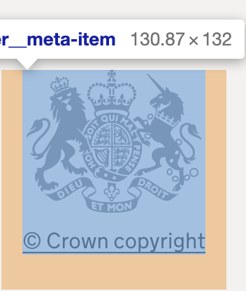

"<a class="govuk-link" href="#">View cookies</a><a class="govuk-link" href="#">change your cookie settings</a>
"Today, finance lands in household economies, in popular economies, and waged economies through mass indebtedness and it does so in ways that are specific to each one of those economies"
Hide cookie message</a><a class="govuk-link" href="#">change your cookie settings</a><a class="govuk-button close-cookies" data-module="govuk-button" draggable="false" href="#" role="button">Hide cookie message</a>
"talking about debt in everyday life brings us to a strategic task: tracing the links between debt and sexist violence. By doing this, contemporary feminist struggles are leading a movement of the politicization and collectivization of the issue of finance (Cavallero and Gago 2018)."
<a class="govuk-button close-cookies" data-module="govuk-button" draggable="false" href="#" role="button">
1. A feminist reading of debt proposes concrete bodies and narratives of its operation in opposition to financial abstraction.
<a class="govuk-skip-link" data-module="govuk-skip-link" href="#">Skip to main content</a><a class="govuk-header__link govuk-header__link--homepage app-header__link" href="/"><span class="govuk-header__logotype">
<img alt="GovUK" class="govuk-header__logotype-crown" src="/assets/images govuk-crown.svg"/>
neocolonial-object-list = [ ]
for item in list.append ('logotype-crown')
print(neocolonial-object-list):

<span class="govuk-header__logotype-text">GOV.UK </span></span> </a><a class="app-header__link" href="/"><span class="govuk-header__product-name app-header__product-name">Development Tracker</span></a><a class="govuk-header__link app-header__link" href="/">Home</a><a class="govuk-header__link app-header__link" href="/sector">Aid by Sector</a><a class="govuk-header__link app-header__link" href="/location/country">Aid by Location</a><a class="govuk-header__link app-header__link" href="/department">Aid by Department</a><a class="govuk-link" href="department/FCDO" title="This figure is calculated by summing the those for the recently combined Department for International Development (DFID) and Foreign and Commonwealth Office (FCO) to reflect the new department. The source data describes these institutions separately.">Foreign, Commonwealth and Development Office</a><a class="govuk-link" href="department/BEIS" title="">=Department for Business, Energy and Industrial Strategy</a><a class="govuk-link" href="department/HO" title="">Home Office</a><a class="govuk-link" href="department/DH" title="">Department of Health and Social Care</a><a class="govuk-link" href="department/CO" title="">Cabinet Office</a><a class="govuk-link" href="department/DEFRA" title="">Department for Environment Food and Rural Affairs</a><a class="govuk-link" href="department/DFE" title="">Department for Education</a><a class="govuk-link" href="department/DWP" title="">Department for Work and Pensions</a><a class="govuk-footer__link" href="/about">About</a><a class="govuk-footer__link" href="/accessibility-statement">Accessibility Statement</a><a class="govuk-footer__link" href="/custom-codes">Custom Codes</a><a class="govuk-footer__link" href="/faq">Glossary</a><a class="govuk-footer__link" href="/privacy-policy" target="_BLANK">Privacy Policy </a><a class="govuk-footer__link" href="https://www.gov.uk/government/organisations/foreign-commonwealth-development-office" target="_BLANK">Contact Us</a><a class="govuk-footer__link" href="/cookies">cookies</a><a class="govuk-footer__link" href="https://www.nationalarchives.gov.uk/doc/open-government-licence/version/3/" rel="license">Open Government Licence v3.0</a>
<a class="govuk-footer__link govuk-footer__copyright-logo" href="https://www.nationalarchives.gov.uk/information-management/re-using-public-sector-information/uk-government-licensing-framework/crown-copyright/">© Crown copyright</a>
neocolonial-object-list = [ ]
for item in list.append ('copyright-logo')
print(neocolonial-object-list):
